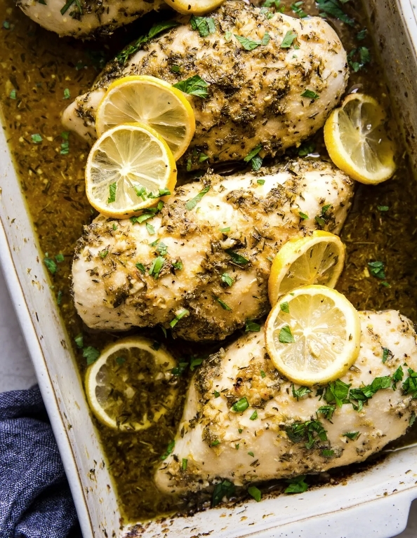

Lemon Chicken
Serves: 6
Prep Time: 5 min
Cook Time: 30 min
Calories: 465 per serving

Description
Lemon chicken is a really simple, healthy recipe. Yes, there are several ingredients and a few steps involved, but it can be prepared in a pinch and really provide you with a great Tuesday dinner or nice meal-prep option for the week.
Many people consider boneless, skinless chicken breast to be excruciatingly boring, and they are correct, to an extent. One reason I like it is for its versatility. It allows you to really paint a picture with the tasteful flavor that is added.
Tools You'll Need
-
9 x 13 baking dish
-
Microplane grater
-
A Citrus juicer
-
Meat thermometer
Ingredients
-
4 Boneless chicken breasts (roughly 2.5lbs)
-
1/4 cup Olive oil
-
2 tsp Oregano, dried
-
2 tsp Thyme, dried
-
2 tsp Garlic powder
-
2 tsp Salt, divided
-
1/2 tsp Black pepper
-
1/2 cup Dry white wine (eg. sauvignon blanc, pinot grigio, or pinot gris)
-
2 tbsp Minced garlic (6 cloves)
-
1 tbsp Lemon zest (2 lemons)
-
2 tbsp Lemon juice, freshly squeezed
-
1 tbsp Brown sugar
-
1 Lemon, cut into 6 slices (optional)
Steps
-
Heat the oven to 400 degrees F.
-
Pat the chicken breasts dry and place them in a 9 x 13 baking dish.
-
In a small bowl, mix the olive oil, oregano, thyme, garlic powder, 1 teaspoon salt and pepper to create a thick marinade/paste. Coat the chicken breast with seasoning paste.
-
Using the same bowl mix together the white wine, garlic, lemon zest, lemon juice, sugar and remaining 1 teaspoon salt. Pour over chicken breast.
-
If using, nestle the lemon slices between the chicken bake for 15 minutes, baste the chicken with the pan juice, bake for another 15 minutes or until the internal temperature of the chicken reads 165 F.